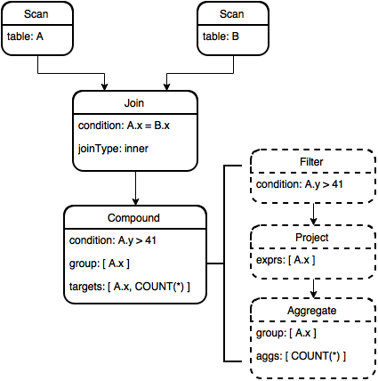

7.2. Interpreter / Optimizer¶
The RelAlgAbstractInterpreter and RelAlgOptimizer are responsible for deserializing the relational algebra tree returned from Calcite (see Calcite Parser) and building a relational algebra tree using OmniSciDB specific data structures. The OmniSciDB RA Tree then passes through several optimization passes. The process of building the OmniSciDB tree and a description of the optimization passes currently employed follows.
7.2.1. Interpreter¶
The class RelAlgAbstractInterpreter deserializes the JSON string containing the optimized relational algebra tree from Calcite. The interpreter file also includes a class hierarchy for defining relational algebra nodes (RelAlgNode) and relational algebra node expressions (Rex). The run method iterates the list of relational algebra nodes present in the JSON and calls a deserialization function for each node. The deserialization function returns a class derived from RelAlgNode – the type of the class corresponds to the type of relational algebra node. A complete list of currently supported relational algebra nodes is available in the table below.
Calcite Node Type |
|
Calcite Description |
|---|---|---|
EnumerableTableScan |
RelScan |
Returns the contents of a table through sequential traversal. |
LogicalProject |
RelProject |
Computes a set of ‘select expressions’ from its input relational expression. |
LogicalFilter |
RelFilter |
Iterates over its input and returns elements for which condition evaluates to true. |
LogicalAggregate |
RelAggregate |
Eliminates duplicates and computes totals. It corresponds to the GROUP BY operator in a SQL query statement, together with the aggregate functions in the SELECT clause. |
LogicalJoin |
RelJoin |
Combines two relational expressions according to some condition. Each output row has columns from the left and right inputs. |
LogicalSort |
RelSort |
Imposes a particular sort order on its input without otherwise changing its content. Also used to represent a LIMIT or OFFSET. |
LogicalValues |
RelLogicalValues |
Relational expression whose value is a sequence of zero or more literal row values. |
LogicalTableModify |
RelModify |
Modifies a table. Expression occurs as a result of DELETE, or UPDATE SQL statements. |
7.2.1.1. RelAlgNode¶
The RelAlgNode base class stores the relationship between RA nodes in the RA tree. Additionally, the RelAlgNode stores a pointer to its execution results after the step described by the node has been executed, as well as the final type information for the nodes targets. Derived classes may store additional information (e.g. the RelScan object contains a pointer to the TableDescriptor for the table being scanned).
7.2.1.2. Rex¶
The Rex class is a pure virtual base class ensuring all Rex derived objects can be serialized to a string. Rex derived objects must implement the toString() method, but are otherwise free to include their own expression-specific member variables and methods. The main Rex objects are described in the table below.
Object Name |
Description |
|---|---|
RexAbstractInput |
Placeholder for a |
RexInput |
Input expression. Directly references a source |
RexLiteral |
Literal expression. |
RexAgg |
Aggregate expression. |
RexOperator |
Unary or binary operator expression (e.g. CAST or AND).
|
RexCase |
Case expression. Stores operands for when, then, and
else similarly to |
RexSubQuery |
Scalar subquery expression. |
RexFunctionOperator |
Function expression. |
RexRef |
Synthetic expression node allowing a column in a group by to be referenced directly by the projection. |
7.2.2. OmniSciDB Specific Query Optimization¶
Once all node objects have been built, the OmniSciDB relational algebra tree passes through several optimization phases. Each optimization is described below.
7.2.2.1. Mark Noops¶
Aggregate RA nodes represent group by operations. In the case where a group by operation is repeated, subsequent aggregate nodes can be marked as a noop. If a node is marked as a noop, the result from the node immediately preceding the aggregate is simply forwarded during query execution. Below is an example SQL query which contains a noop node:
SELECT first_name FROM (SELECT first_name FROM Users GROUP BY first_name) GROUP BY first_name;
Calcite generates the following RA tree.
Explanation
LogicalAggregate(group=[{0}])
LogicalAggregate(group=[{0}])
LogicalProject(first_name=[$0])
EnumerableTableScan(table=[[mapd, Users]])
The second aggregate node is clearly a duplicate of the first. Therefore, the second aggregate node is marked as a noop and the result from the first node (after the project) is forwarded.
Note
The RA tree inspected by prefixing any SELECT query with explain calcite.
7.2.2.2. Eliminate Identical Copies¶
Detects and removes project nodes which forward targets to other project nodes higher in the relational algebra tree. Eliminating identical copies reduces intermediate buffer use. But, more importantly, this optimization step prepares the RA tree for further manipulation in the steps below.
7.2.2.3. Fold Filters¶
Detects two identical filter nodes and folds the filters into a single filter node using the binary operator AND. Calcite typically folds most filters automatically during query operation. However, if an intermediate buffer is removed during the eliminate identical copies step, additional opportunities for filter folding may exist. Consider the following example:
SELECT x, y FROM (SELECT a.str AS str, b.x AS x, a.y AS y FROM test a, join_test b WHERE a.x = b.x) WHERE str = 'foo' ORDER BY x LIMIT 1;
The generated RA from Calcite is:
1 2 3 4 5 6 7 8 | LogicalSort(sort0=[$0], dir0=[ASC], fetch=[1])
LogicalProject(x=[$1], y=[$2])
LogicalFilter(condition=[=($0, 'foo')])
LogicalProject(str=[$10], x=[$35], y=[$1])
LogicalFilter(condition=[=($0, $35)])
LogicalJoin(condition=[true], joinType=[inner])
EnumerableTableScan(table=[[omnisci, test]])
EnumerableTableScan(table=[[omnisci, join_test]])
|
The project node on line 4 can be removed, with its projected targets pushed to the project node on line 2 (see eliminate identical copies). Once the project node on line 4 is removed, the filters on lines 3 and 5 can be folded.
7.2.2.4. Eliminate Dead Columns¶
Intermediate projection nodes may sometimes load more inputs than are actually required by subsequent nodes. In OmniSciDB, each projection node input is loaded into memory and projected through as an output target. The dead columns elimination step ensures that only columns that are be used in subsequent projections are loaded into memory. As an example, consider the following table and query:
CREATE TABLE dead_cols_test (x INT, y FLOAT);
SELECT t1.x FROM dead_cols_test t1 JOIN (SELECT * FROM dead_cols_test) t2 ON t1.x = t2.x;
The Calcite generated plan is:
1 2 3 4 5 | LogicalProject(x=[$0])
LogicalJoin(condition=[=($0, $3)], joinType=[inner])
EnumerableTableScan(table=[[mapd, dead_cols_test]])
LogicalProject(x=[$0], y=[$1], rowid=[$2])
EnumerableTableScan(table=[[mapd, dead_cols_test]])
|
Note that the projection on line 4 is projecting the y column (as part of the select * expansion in the right hand side join condition). But, y is not used in a subsequent projection; therefore, we can eliminate y and avoid loading the column for y into the memory hierarchy.
7.2.2.5. Separate Window Function Expressions¶
OmniSciDB currently requires window function expressions to be top-level expressions on their corresponding RA node. To ensure window function expressions can be embedded in other expressions, we detect the presence of embedded window function expressions and “split” the expression, pushing the top-level expression up to a new projection node, replacing the window function expression in the top-level expression with an input expression, and finally replacing the existing top-level expression in the current projection node with the window function expression.
For example, consider the simple expression LAG() - 1. The top level expression is a BinaryOperator (with the op type of -, left hand side LAG(), and right hand side 1). We detect the presence of the embedded window function expression, make a copy of the binary operator expression, forward it to a new projection node, and replace the window function expression with an input. Now we have BinaryOperator with the op type -, the left hand side an input target from the previous projection, and the right hand side 1 as before. Finally, we replace the existing binary operator with the top-level window function expression on the existing project node.
7.2.2.6. Coalesce Nodes¶
Calcite generates canonical relational algebra. Sometimes, executing operations in the canonical order would involve redundant intermediate buffers. The use of intermediate buffers must be minimized to ensure the highest utilization of available compute and memory resources. Therefore, we walk the RA DAG looking for patterns to be coalesced into a synthetic node to be executed without intermediate buffers while preserving the observable effects.
For example, we coalesce the Filter, Project, Aggregate chain into a single synthetic node, which we call RelCompound. The compound node evaluates the filter and the aggregate on the fly and avoids the intermediate buffers for Filter and Project outputs.
Consider the following example:
SELECT A.x, COUNT(*) FROM test JOIN B ON A.x = B.x WHERE A.y > 41 GROUP BY A.x;
The RA tree before and after the coalesce nodes optimization is depicted before (nodes before optimization are drawn with dashed lines). The Compound node now contains all information needed to evaluate the filter and (potentially grouped) aggregates using just the memory buffer required for the final result.
7.2.2.7. Create Left Deep Join¶
The RelLeftDeepJoin node is another synthetic node, similar to RelCompound, which allows multiple join loops to be nested in join loops to be nested in a single operator. Consider the following example:
SELECT COUNT(*) FROM a JOIN b ON a.x = b.x JOIN c ON b.x = c.x;
Calcite generates the following RA tree:
1 2 3 4 5 6 7 | LogicalAggregate(group=[{}], EXPR$0=[COUNT()])
LogicalProject($f0=[0])
LogicalJoin(condition=[=($2, $4)], joinType=[inner])
LogicalJoin(condition=[=($0, $2)], joinType=[inner])
EnumerableTableScan(table=[[omnisci, a]])
EnumerableTableScan(table=[[omnisci, b]])
EnumerableTableScan(table=[[omnisci, c]])
|
The join nodes on lines 3 and 4 can be coalesced into a single join node, as long as the join condition on line 4 is checked before line 3. The RelLeftDeepJoin node coalesces multiple join conditions into a single node, and dictates the ordering of the join conditions during code generation.